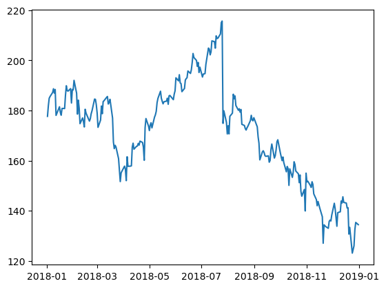
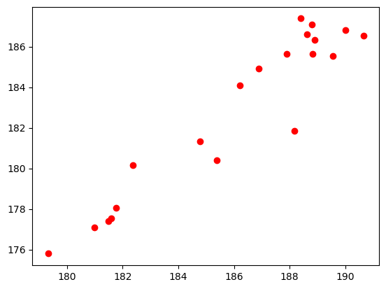
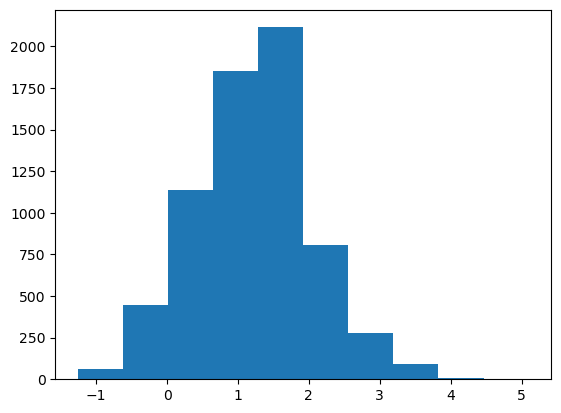
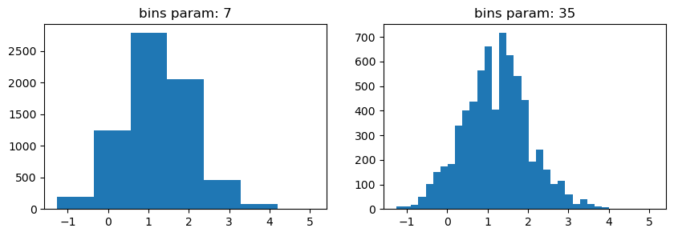
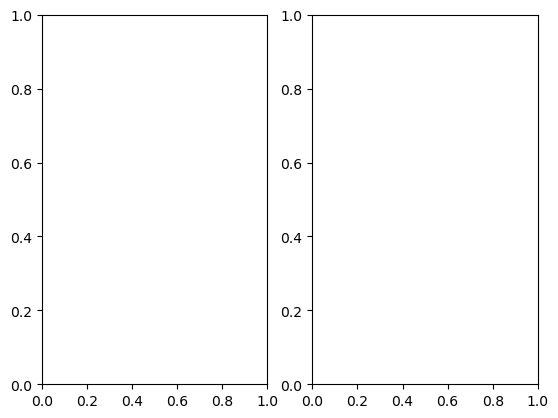
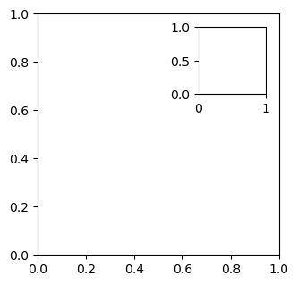
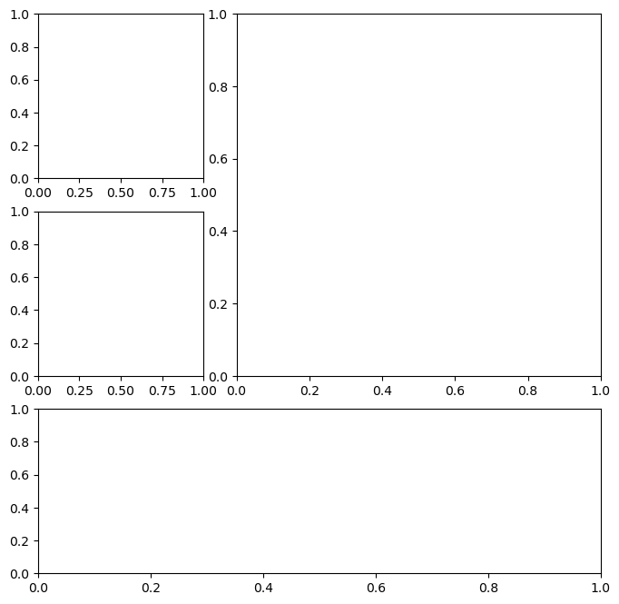
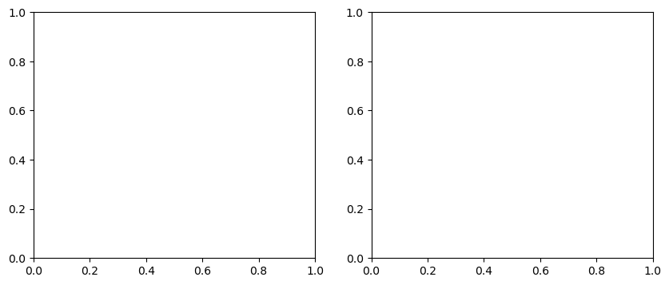

import matplotlib.pyplot as plt
import pandas as pdGetting Started with Matplotlib
Getting Started with Matplotlib
Pandas uses matplotlib to create visualizations. Therefore, before we learn how to plot with pandas, it’s important to understand how matplotlib works at a high-level, which is the focus of this notebook.
About the Data
In this notebook, we will be working with 2 datasets: - Facebook’s stock price throughout 2018 (obtained using the stock_analysis package) - Earthquake data from September 18, 2018 - October 13, 2018 (obtained from the US Geological Survey (USGS) using the USGS API)
Setup
We need to import matplotlib.pyplot for plotting.
Plotting lines
fb = pd.read_csv(
'../data/fb_stock_prices_2018.csv', index_col='date', parse_dates=True
)
plt.plot(fb.index, fb.open)
plt.show()
Since we are working in a Jupyter notebook, we can use the magic command %matplotlib inline once and not have to call plt.show() for each plot.
%matplotlib inline
import matplotlib.pyplot as plt
import pandas as pd
fb = pd.read_csv(
'../data/fb_stock_prices_2018.csv', index_col='date', parse_dates=True
)
plt.plot(fb.index, fb.open)Scatter plots
We can pass in a string specifying the style of the plot. This is of the form [marker][linestyle][color]. For example, we can make a black dashed line with '--k' or a red scatter plot with 'or':
plt.plot('high', 'low', 'or', data=fb.head(20))
Here are some examples of how you make a format string:
| Marker | Linestyle | Color | Format String | Result |
|---|---|---|---|---|
- |
b |
-b |
blue solid line | |
. |
k |
.k |
black points | |
-- |
r |
--r |
red dashed line | |
o |
- |
g |
o-g |
green solid line with circles |
: |
m |
:m |
magenta dotted line | |
x |
-. |
c |
x-.c |
cyan dot-dashed line with x’s |
Note that we can also use format strings of the form [color][marker][linestyle], but the parsing by matplotlib (in rare cases) might not be what we were aiming for. Consult the Notes section in the documentation for the complete list of options. ## Histograms
quakes = pd.read_csv('../data/earthquakes.csv')
plt.hist(quakes.query('magType == "ml"').mag)(array([6.400e+01, 4.450e+02, 1.137e+03, 1.853e+03, 2.114e+03, 8.070e+02,
2.800e+02, 9.200e+01, 9.000e+00, 2.000e+00]),
array([-1.26 , -0.624, 0.012, 0.648, 1.284, 1.92 , 2.556, 3.192,
3.828, 4.464, 5.1 ]),
<BarContainer object of 10 artists>)
Bin size matters
Notice how our assumptions of the distribution of the data can change based on the number of bins (look at the drop between the two highest peaks on the righthand plot):
x = quakes.query('magType == "ml"').mag
fig, axes = plt.subplots(1, 2, figsize=(10, 3))
for ax, bins in zip(axes, [7, 35]):
ax.hist(x, bins=bins)
ax.set_title(f'bins param: {bins}')
Plot components
Figure
Top-level object that holds the other plot components.
fig = plt.figure()<Figure size 640x480 with 0 Axes>Axes
Individual plots contained within the Figure.
Creating subplots
Simply specify the number of rows and columns to create:
fig, axes = plt.subplots(1, 2)
As an alternative to using plt.subplots() we can add Axes objects to the Figure object on our own. This allows for some more complex layouts, such as picture in picture:
fig = plt.figure(figsize=(3, 3))
outside = fig.add_axes([0.1, 0.1, 0.9, 0.9])
inside = fig.add_axes([0.7, 0.7, 0.25, 0.25])
Creating Plot Layouts with gridspec
We can create subplots with varying sizes as well:
fig = plt.figure(figsize=(8, 8))
gs = fig.add_gridspec(3, 3)
top_left = fig.add_subplot(gs[0, 0])
mid_left = fig.add_subplot(gs[1, 0])
top_right = fig.add_subplot(gs[:2, 1:])
bottom = fig.add_subplot(gs[2,:])
Saving plots
Use plt.savefig() to save the last created plot. To save a specific Figure object, use its savefig() method. Which supports ‘png’, ‘pdf’, ‘svg’, and ‘eps’ filetypes.
fig.savefig('empty.png')
fig.savefig('empty.pdf')
fig.savefig('empty.svg')
fig.savefig('empty.eps')Cleaning up
It’s important to close resources when we are done with them. We use plt.close() to do so. If we pass in nothing, it will close the last plot, but we can pass in the specific Figure object to close or say 'all' to close all Figure objects that are open. Let’s close all the Figure objects that are open with plt.close():
plt.close('all')Additional plotting options
Specifying figure size
Just pass the figsize argument to plt.figure(). It’s a tuple of (width, height):
fig = plt.figure(figsize=(10, 4))<Figure size 1000x400 with 0 Axes>This can be specified when creating subplots as well:
fig, axes = plt.subplots(1, 2, figsize=(10, 4))
rcParams
A small subset of all the available plot settings (shuffling to get a good variation of options):
import random
import matplotlib as mpl
rcparams_list = list(mpl.rcParams.keys())
random.seed(20) # make this repeatable
random.shuffle(rcparams_list)
sorted(rcparams_list[:20])['animation.convert_args',
'axes.edgecolor',
'axes.formatter.use_locale',
'axes.spines.right',
'boxplot.meanprops.markersize',
'boxplot.showfliers',
'keymap.home',
'lines.markerfacecolor',
'lines.scale_dashes',
'mathtext.rm',
'patch.force_edgecolor',
'savefig.facecolor',
'svg.fonttype',
'text.hinting_factor',
'xtick.alignment',
'xtick.minor.top',
'xtick.minor.width',
'ytick.left',
'ytick.major.left',
'ytick.minor.width']We can check the current default figsize using rcParams:
mpl.rcParams['figure.figsize'][6.4, 4.8]We can also update this value to change the default (until the kernel is restarted):
mpl.rcParams['figure.figsize'] = (300, 10)
mpl.rcParams['figure.figsize'][300.0, 10.0]Use rcdefaults() to restore the defaults. Note this is slightly different than before because running %matplotlib inline sets a different value for figsize (see more). After we reset, we are going back to the default value of figsize before that import:
mpl.rcdefaults()
mpl.rcParams['figure.figsize'][6.4, 4.8]This can also be done via pyplot:
plt.rc('figure', figsize=(20, 20)) # change `figsize` default to (20, 20)
plt.rcdefaults() # reset the default